Zennの「frontend」のフィード
フィード
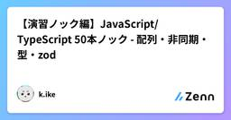
【演習ノック編】JavaScript/TypeScript 50本ノック - 配列・非同期・型・zod
Zennの「frontend」のフィード
このノックについて35日シリーズ（フロントエンド編）の演習編、第1弾です。本編の #2〜#5（JavaScript基礎・非同期処理・TypeScript）まで終えてから取り組んでください。 読んで分かった気になった知識を、手を動かして「書ける」に変えるのがこのノックの目的です。姉妹シリーズのバックエンド編にも、本編の合間に50本ノックを挟む回がありました。あれとまったく同じ趣旨です。Vue のコードは、結局のところ JavaScript の配列操作と非同期処理と型の組み合わせでできています。ここが素振りできていると、本編 #6 以降の Vue が「新しい文法」ではなく「知っている...
9分前
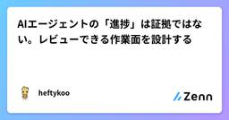
AIエージェントの「進捗」は証拠ではない。レビューできる作業面を設計する
Zennの「frontend」のフィード
「12ステップ完了」「テスト実行済み」「作業が完了しました」。AIエージェントの画面にこうした表示が増えると、仕事が管理しやすくなったように見える。しかし、見えるものが増えたことと、正しさの証拠が増えたことは別だ。進捗表示はテレメトリーであって、受け入れ判定ではない。エージェントが何をしたかを追えるだけでは、人間がなぜ approve してよいのかまでは分からない。 「作業中」が教えてくれること、教えてくれないことVisual StudioのCopilot更新は、各ステップの結果、実行コマンド、使用モデルや実行ステップを見せる方向へ進んでいる。これは重要な改善だ。少なくとも、エー...
4時間前

ChatGPTが生成したHTMLをコードを書かずに視覚的に編集する方法
Zennの「frontend」のフィード
ChatGPTに短い指示を出せば、整ったレスポンシブHTMLページが1分足らずで出力されます。ところが、コードをコピーした直後から手が止まりがちです。中央の解説ブロックは抽象的な宣伝文句ばかり、イベントバッジは昨年の日付のまま、メインボタンのリンク先はダミーURLのまま残っています。**ChatGPTが生成したHTMLは、コードに触れずページ全体を再生成せずにビジュアル編集できます。**スタンドアロンHTMLをワークスペースへ貼り付け、冗長な1ブロックだけを選んでAIで部分修正し、確定した日付や定員・URLをキャンバス上で直接書き換えてから保存・書き出しを行います。多くの人が行き詰...
16時間前
TanStack Query で楽観的更新を実装する
Zennの「frontend」のフィード
TanStack Query で楽観的更新を実装する 概要「いいね」ボタンやチェックボックス、並び替えなど、ユーザー操作に対して即座に反応してほしいUIがあります。サーバーのレスポンスを待ってから画面を書き換えると、どうしても数百ミリ秒の「待ち」が発生し、体感が重くなります。楽観的更新（Optimistic Update）は、サーバーの成功を見込んで先にUIを書き換え、失敗したら元に戻すという手法です。本記事では TanStack Query（旧 React Query）v5 の useMutation で、この楽観的更新を安全に実装する方法をハンズオン形式でまとめます。扱...
16時間前
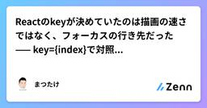
Reactのkeyが決めていたのは描画の速さではなく、フォーカスの行き先だった —— key={index}で対照実験した
Zennの「frontend」のフィード
!2作目のポートフォリオとして「Hubpin」（分散した発信を1か所に集めるハブサイト）を作りながら書いています。カードを ↑↓ ボタンで並び替える機能の話です。リポジトリ: https://github.com/Matsutake29/hubpinNext.js（App Router） + Supabase + Tailwind CSS並び替えのボタンを実装したとき、手順書には「押した直後にフォーカスが消える」と予想が書いてありました。実際は消えず、連続で押せました。key={item.id} のおかげだと推測したのですが、確かめていなかったので、key={index...
1日前
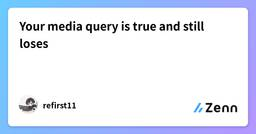
Your media query is true and still loses
Zennの「frontend」のフィード
A media query is the most common override in CSS, and it has no more weight than the rule it overrides:@media (min-width: 768px) { .title { font-size: 32px; }}.title { font-size: 24px;}On a wide screen, the title is 24px. Both rules match, @media adds nothing to specificity, and t...
1日前

AI に作らせた画面はきれいなのに、文字が小さく色が薄い。ブラウザで開いて確かめさせる Skill
Zennの「frontend」のフィード
AI に「申し込みフォームの見た目を整えて」と頼むと、コードの上ではきれいに整います。ところが測ってみると、送信ボタンの白い文字と青の背景の明るさの比は 3.5 でした（読みやすさの基準の WCAG では 4.5 以上）。注意書きは 13px のまま、未入力のエラーは、どの欄が足りないか分からないポップアップのままです。そしてブラウザで開かずに「実機で一度見てください」と渡します。web-ui-quality は、色や雰囲気の好みは決めずに、誰にとっても悪くない下限をそろえさせ、スマホと PC の幅でブラウザで開いて測ってから渡させる Skill です。Skill は、エージェントが作業...
2日前

個人サイトをSolid StartからSolid 2 に移行したらめっちゃしっくりきた
Zennの「frontend」のフィード
はじめにSolid 2 が正式リリースされたので、Cloudflare Workers で動かしている個人サイトを移行してみました。トップページには Qiita・Zenn の記事一覧と GitHub の活動欄があります。活動欄はドラッグで並び替えられますし、動画は画面に入ったときだけ再生します。移行してみると、記事の取得や動画の再生、ドラッグ中の状態更新で、それぞれ書き方が変わりました。Cloudflare Workers にデプロイする構成も見直しました。https://numekudi.primitive-ojisan.com/ 非同期の記事一覧移行前は Solid ...
2日前
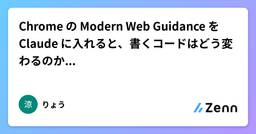
Chrome の Modern Web Guidance を Claude に入れると、書くコードはどう変わるのか（72 実装で検証）
Zennの「frontend」のフィード
はじめにGoogle Chrome チームが公開している Modern Web Guidance（以下 MWG）は、AI コーディングエージェントに「今のブラウザで使える、今どきの書き方」を教えるためのスキルです。Claude Code ならプラグインとして入れるだけで、HTML / CSS / クライアント JS の作業時にガイドを検索して参照してくれるようになります。気になったのは、実際に入れると Claude が書くコードの何がどう変わるのかという点です。そこで、同じ依頼を MWG「なし」と「あり」で実装させて比較しました。!検証の概要検証日: 2026-11-18...
2日前
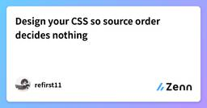
Design your CSS so source order decides nothing
Zennの「frontend」のフィード
Three bugs from the last few posts look unrelated:A CSS Modules override that breaks when the chunks moveA shorthand that wipes a longhand set by another classA style mistake an agent cannot see, often an override that quietly lostThey have one cause. Two rules match the same element, set ...
2日前
padding resets padding-top, and that is your override bug
Zennの「frontend」のフィード
A card has no top padding when it sits under a header:.card { padding: 16px;}.flush { padding-top: 0;}<div class="card flush"> works. Then someone tidies the stylesheet, .flush moves above .card, and the top padding is back. Nothing about .flush changed. A shorthand is...
2日前

CSS fails silently, and your agent can't see it
Zennの「frontend」のフィード
A coding agent finishes a component, the build is green, and the review diff looks fine. Then someone opens the page: the menu sits in the document flow instead of over it, a button uses a grey that is not in the palette, and the spacing is 14px where everything else is 12 or 16.None of these ar...
2日前
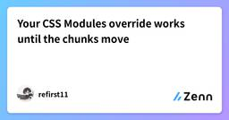
Your CSS Modules override works until the chunks move
Zennの「frontend」のフィード
A shared button sets its own background, and a page passes a class to change it:Button.module.css.base { padding: 8px 20px; background: blue;}Settings.module.css.danger { background: red;}Settings.tsximport styles from './Settings.module.css';import { Button } from ...
2日前
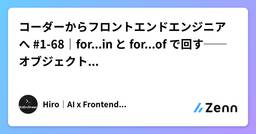
コーダーからフロントエンドエンジニアへ #1-68｜for...in と for...of で回す──オブジェクトのくり返し
Zennの「frontend」のフィード
はじめに前回の #1-67 では、Object.keys・Object.values・Object.entries で「オブジェクトを配列にする」方法を学びました。配列にしてしまえば、map・filter・reduce などの配列メソッドが使えるのでした。では、配列メソッドを使わずに、オブジェクトの中身を1つずつ順番に処理したいときはどうすればよいでしょうか。たとえば「全商品を画面に1行ずつ出す」「在庫が0の商品はとばして、途中で条件を満たしたら打ち切る」といった処理です。そこで登場するのが for...in と for...of です。配列では #1-44 で for...o...
3日前

Safariだけ、日本語変換を確定するEnterで送信されてしまう
Zennの「frontend」のフィード
「Enter でキーワードを追加する」入力欄を作りました。Chrome では問題なく動きます。ところが Safari で日本語を打つと、変換を確定するための Enter で、打ちかけの語がそのまま追加されてしまいました。event.isComposing を見て変換中の Enter は無視しているのに、です。 よく紹介される対策IME の変換中に押された Enter は、keydown の isComposing が true になります。だから次のように書けば十分、というのが定番です。field.addEventListener("keydown", (e...
3日前
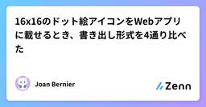
16x16のドット絵アイコンをWebアプリに載せるとき、書き出し形式を4通り比べた
Zennの「frontend」のフィード
趣味で作っているタスク管理アプリのボタンに、16x16のドット絵アイコンを4つ（設定・保存・削除・お気に入り）入れることにしました。描くのは一晩で終わりました。ところが「どの形式で書き出して、どう表示するか」でけっこう迷ったので、試した4通りを比較した結果をまとめます。対象読者は、HTML/CSSで小さなアイコンをくっきり表示したい人です。 前提：アイコンの作り方ブラウザで動くエディタを使い、16x16のキャンバスにドット絵を描きました。インストール不要で、描いた内容はアップロードされず、作業はそのブラウザのIndexedDBに自動保存されます。使ったのは次の機能だけです。...
3日前
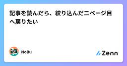
記事を読んだら、絞り込んだ二ページ目へ戻りたい
Zennの「frontend」のフィード
一覧の「戻る」で、カテゴリとページ番号を保つ。約30本の仮記事を使ったローカル試作で、URLに残す状態と、記事へ渡す戻り先を追います。教育のテーマで絞り、二ページ目へ進む。そこにある一件を開いて、一覧へ戻る。戻った先が、教育の二ページ目になっている。一件だけのページへ、わざわざ戻る。GAJU LABの記事一覧を想定したローカル試作で、そんな往復をつくりました。記事を読んだあとも、題名を見比べていた続きから探したいのです。この時に用意したのは、記事が約30本ある状態のローカル試作です。新聞の既存草稿以外は、架空の記事企画と概要で埋めました。30本を書き上げた実績ではなく、増えた時の...
3日前
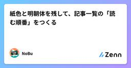
紙色と明朝体を残して、記事一覧の「読む順番」をつくる
Zennの「frontend」のフィード
記事一覧の視覚的な階層を、書体・ウェイト・罫線・列数で調整した例です。同じ文言の二案と、実際に適用したCSS値、表示確認で分かった範囲を示します。紙色の背景に、明朝体の大見出し。自分の制作ブログ、GAJU LABで残したかったのは、その組み合わせのある雰囲気でした。記事は、すっと選べるようにしたい。でも、気に入っている見た目も残したい。どちらも欲しいので、文字や線をどこから触るか、考えてみました。まずは、二つの一覧を並べます。中に入っている記事と、その順番は同じです。 二つの一覧を、先に眺めてみる少し引いて、AとBを眺めてみてください。どこから読み始めたくなるでしょう。変...
3日前

Claude Designで再現性のあるデザインを作るためにやったこと
Zennの「frontend」のフィード
初めにこんにちは。しーさんです。少しずつAIを使った開発に慣れてきたかなと感じる今日ですが、業務でのフロントエンド開発においてClaude Designがありがたかったポイントを紹介します。おそらくエンジニアリングと似たような話になってると思いますが、ご参考になればということで、、、笑 Claude DesignとはAnthropicが提供している、プロンプトからデザインやプロトタイプ、スライドなどを作成できる機能です。コードベースを読み込んでデザインシステムを作成したり、作成したデザインをClaude Codeに引き渡したりといった、開発との連携もできます。h...
3日前

【Part4】【No.021】三項演算子・&&・early return ― 0が出る失敗から学ぶ条件レンダリングの使い分けの最低限
Zennの「frontend」のフィード
みなさん、こんにちは！ペンギンエンジニアです！前回020の次回予告で、「次回021は、条件で表示を出し分けます。三項演算子・&&・early return の使い分けです。今日の入力欄が空のときにメッセージを出したり、初期値のときにボタンを隠したりできるようになります」とお伝えしました。今日はその約束を回収する回です。020のまとめでは、「空のまま送信すると、名前が空になります。初期値のときに『初期値に戻す』が押せるのも、気になります」とも書きました。今日は、この2つを条件で出し分けます。先に種明かしをすると、{} の中には if が書けないので、代わりの書き...
3日前